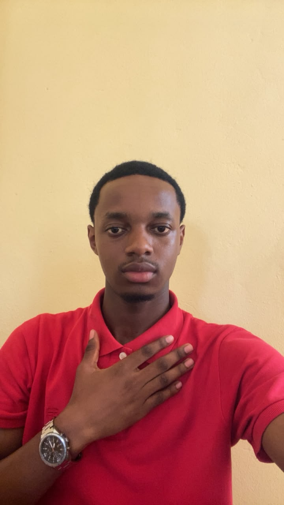

APPLICATION DE GESTION · VISUAL BASIC
CamerLigue
Application de gestion de compétitions sportives, conçue pour organiser et suivre les activités d'une compétition.
Étudiant en génie logiciel / IUC, niveau 2
Étudiant en génie logiciel, passionné par le développement web et les solutions numériques.
Je m'intéresse aux idées qui relient technologie, usage et business.

01 / À PROPOS
Étudiant en deuxième année de BTS en génie logiciel à l'Institut universitaire de la Côte (IUC), je m'intéresse au développement web et à la création de solutions numériques qui répondent à des besoins concrets.
À travers mes projets, je développe mes compétences en programmation et explore le lien entre technologie et business.
02 / COMPÉTENCES
Des bases en programmation que je consolide au fil de ma formation et de mes projets.
03 / PROJETS SÉLECTIONNÉS
Projets académiques et personnels. Les liens de démonstration seront ajoutés lorsqu'ils seront disponibles.
APPLICATION DE GESTION · VISUAL BASIC
Application de gestion de compétitions sportives, conçue pour organiser et suivre les activités d'une compétition.
DÉMO D'INVESTISSEMENT EN LIGNE · WEB & PYTHON
Application de démonstration autour de l'investissement en ligne, réalisée avec HTML, CSS, JavaScript et Python.
PROJET À VENIR
Un nouveau projet en préparation. Plus d'informations seront ajoutées au fil de son développement.
04 / CONTACT
Échangeons autour du développement web, de la technologie ou d'une collaboration.
princemarius015@gmail.com